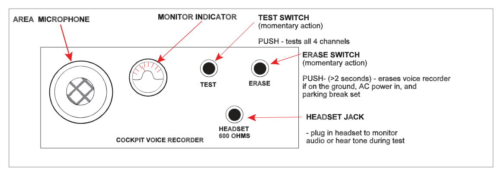

What this section covers: The purpose and principal function of the Cockpit Voice Recorder (CVR) system.
The principal function of the Cockpit Voice Recorder (CVR) system is to preserve, in the event of an air accident, vital information recoverable for use by the Accident Investigation Branch (AIB).
The CVR automatically records the last 30 minutes (or 2 hours on some aircraft — see regulations) of communications and conversations on the flight deck.
The CVR is operational whenever:
115 volts AC power is applied to the aircraft, or
Any engine is running, or
The aircraft is airborne.
The system comprises: a tape/digital recorder, a control unit, a monitor display, and an area microphone.
Exam Tip: The CVR operates on three conditions: 115V AC power applied, any engine running, or aircraft airborne — any one of these is sufficient. Know all three.
2. What the CVR Records
What this section covers: The five categories of information the CVR must capture, and the regulatory timing of recording.
The CVR must record from before the aircraft is capable of moving under its own power until it is no longer able to do so. It should also record pre-start and post-engine-shutdown procedures. The five parameters recorded are:
Voice communications transmitted from or received on the flight deck
The aural environment of the flight deck
Voice communications of flight crew members using the aeroplane's interphone system
Voice or audio signals introduced into a headset or speaker
Voice communications of flight crew using the PA system
Memory Aid — "TEIPA": Transmitted comms, Environment (aural), Interphone, PA system, Audio signals to headset/speaker.
3. The Voice Recorder Unit
What this section covers: Physical construction of the CVR unit, its protective housing, colour, location, and the Underwater Locating Device (ULD).
Feature
Detail
Housing
Crash-proof metal box — withstands shock, high temperature, and fire
Fig 37.1 — Cockpit Voice Recorder unit and location diagram (source p.506)
Critical Limitation — ULD: The Underwater Locating Device emits ultrasonic pulses — not radio signals. It helps locate a submerged CVR but has a finite battery life of only several days. This is why rapid crash site location is operationally critical.
4. The Control Unit
What this section covers: Location, controls, and safeguards of the CVR control unit on the flight deck.
The control unit is mounted on the flight deck, usually in the roof (overhead) panel. It contains monitoring and testing circuitry and houses the area microphone which picks up general flight deck conversations and ambient sounds.
Control Functions
Control
Position/Action
Function
AUTO / ON switch
AUTO
CVR starts when first engine starts; stops 5 minutes after last engine shutdown
AUTO / ON switch
ON
CVR begins recording immediately; latches ON until first engine start (clicks back to AUTO)
CVR TEST button
Press
Activates full BITE self-test; success = visual 'good' indication (needle deflection or LED)
ERASE button
Hold ≥ 2 seconds
Erases recordings — ONLY possible with: aircraft on ground + all engines stopped + parking brake SET

Fig 37.2 — CVR Control Unit with area microphone (source p.507)
ERASE Safeguards — Critical: Tape/recording erasure is only possible when ALL of the following are simultaneously true:
Aircraft is on the ground
All engines are stopped
Parking brake is SET
Erase button held depressed for at least 2 seconds
"Suitable safety interlocks are installed to prevent inadvertent or airborne tape erasure."
flowchart TD
A[ERASE button pressed] --> B{Aircraft on ground?}
B -- No --> C[❌ Erase inhibited]
B -- Yes --> D{All engines stopped?}
D -- No --> C
D -- Yes --> E{Parking brake SET?}
E -- No --> C
E -- Yes --> F{Button held ≥ 2 seconds?}
F -- No --> C
F -- Yes --> G[✅ Erasure permitted]
Quick Revision Summary — Section 4:
Control unit: overhead panel; contains area microphone.
AUTO: starts on first engine start; stops 5 min after last engine shutdown.
ON: starts immediately; latches until first engine start then reverts to AUTO.
TEST: BITE self-test — visual "good" indication on pass.
ERASE: Ground + all engines stopped + parking brake set + hold ≥ 2 sec.
5. European Regulations
What this section covers: CVR carriage requirements, recording times, dispatch with unserviceable CVR, and combined recorder rules for EU-registered commercial air transport aircraft.
CVR Carriage Requirements — EU Commercial Air Transport:
Case
Aircraft Category
Registration
Case 1
All aeroplanes registered after 1 April 1998 which are >5,700 kg MTOM, OR turbine-powered <5,700 kg with >9 passenger seats
After 1 Apr 1998
Case 2
Turbine-powered aeroplanes <5,700 kg MTOM with >9 passenger seats
Between 1 Jan 1990 and 31 Mar 1998
Case 3
All aeroplanes with MTOM >5,700 kg
Any date
Minimum Recording Times
Aircraft Category
Minimum Recording Time
Standard minimum
30 minutes
MTOM >5,700 kg, registered after 1 April 1998
2 hours
Key Rules on Combined Recorders
MTOM
Recorder Rule
≤ 5,700 kg
May carry a combined CVR/FDR (single unit)
> 5,700 kg
If combined recorders are fitted, must have two combined units
Dispatch with Unserviceable CVR: The rules are the same as for an unserviceable FDR:
Not reasonably practicable to repair before flight
No more than 8 further consecutive flights
Not more than 72 hours since the unserviceability was discovered
The FDR (if required) must be operative
Key Difference — CVR vs FDR Regulations:
Parameter
FDR
CVR
Standard min recording time
25 hrs (>5,700 kg)
30 min
Extended recording time
10 hrs (<5,700 kg)
2 hrs (>5,700 kg, post Apr '98)
Case 2 date range
Since 1 Jun 1990
1 Jan 1990 – 31 Mar 1998
Dispatch limits
Identical: 8 flights / 72 hours
Practice Questions & Detailed Answers
Source Questions: The following questions are taken verbatim from the Oxford source text (pp. 508–509), with answers from the source answer key (p. 510). Explanations are instructor-generated.
Q1.An altitude alerting system must at least be capable of alerting the crew on:
Approaching selected altitude
Abnormal gear/flap combination
Excessive vertical speed
Excessive terrain closure
Excessive deviation from selected altitude
Failure to set SPS or RPS as required
1 & 3
2 & 5
4 & 6
1 & 5
Correct Answer: (d) 1 & 5
Explanation: An altitude alerting system has two minimum functions: (1) alerting the crew when approaching the selected altitude, and (5) alerting when there is an excessive deviation from the selected altitude. Items 2, 3, 4, and 6 are associated with other warning systems (gear/flap warning, VSI, GPWS, etc.) but are not mandatory functions of an altitude alerting system per se.
Why the other options are wrong:
(a) 1 & 3 — Excessive vertical speed (3) is not a minimum requirement of the altitude alerting system; it relates to VSI or GPWS.
(b) 2 & 5 — Abnormal gear/flap combination (2) is a separate configuration warning; not an altitude alerting function.
(c) 4 & 6 — Excessive terrain closure (4) = GPWS Mode 2; setting SPS/RPS (6) is a separate altimetry check requirement.
Instructor's Note: This question covers altitude alerting systems from Ch. 32/33 but appears in the Ch. 37 question bank. The altitude alerting system alerts on: (1) approaching selected altitude and (5) deviating from selected altitude. Two functions — approaching and deviating.
Q2.According to the regulations, when must the FDR on a 12-seat turbo-prop aircraft begin recording?
Switch on until switch off
From before the aircraft is capable of moving under its own power to after the aircraft is no longer capable of moving under its own power
From lift-off until the weight-on-wheels switch is made on landing
At commencement of the taxi to turning off the runway
Correct Answer: (b) From before the aircraft is capable of moving under its own power to after the aircraft is no longer capable of moving under its own power
Explanation: The regulatory requirement is stated verbatim in the source: "The FDR must start automatically to record the data prior to the aeroplane being capable of moving under its own power and must stop automatically after the aeroplane is incapable of moving under its own power." In practice this means from first engine start until 5 minutes after last engine shutdown. A 12-seat turbo-prop exceeds the 9-seat threshold and qualifies for FDR requirements. See Section 5.
Why the other options are wrong:
(a) — FDR is not manually switched; it starts and stops automatically based on engine state.
(c) — Lift-off to weight-on-wheels would miss taxi, engine start, and post-landing ground roll data — all operationally significant.
(d) — Taxi-only recording would miss pre-taxi engine start and post-landing ground operations.
Instructor's Note: This is fundamentally a regulations question about the FDR, not the CVR. The wording "capable of moving under its own power" is the regulatory language — memorise it verbatim. It equates to: first engine start → 5 min after last engine shutdown.
Q3.What is the GPWS mode 3 audible alert?
"don't sink, don't sink" followed by "whoop, whoop, pull up" if the sink rate exceeds a certain value
"don't sink, don't sink" followed immediately by "whoop, whoop, pull up"
Explanation: GPWS Mode 3 — Altitude loss after take-off or go-around. The alert is "DON'T SINK, DON'T SINK" (spoken phrase), repeated continuously while the condition exists. It does not immediately escalate to "pull up." Escalation to the "whoop whoop pull up" siren is a feature of Mode 1 (excessive descent rate). See Chapter 34 (GPWS).
Why the other options are wrong:
(a) — Conditional escalation to "pull up" applies to Mode 1, not Mode 3.
(b) — Immediate "pull up" following "don't sink" is not correct for Mode 3.
(d) — "Terrain" is used in Mode 2 (excessive terrain closure), not Mode 3.
Instructor's Note: GPWS Mode 3 = altitude loss after T/O or go-around = "DON'T SINK." GPWS Mode 1 = excessive descent rate = "WHOOP WHOOP PULL UP." Mode 2 = excessive terrain closure = "TERRAIN, TERRAIN." Keep these distinct.
Q4.What are the inputs to a modern jet transport aeroplane's stall warning system?
AoA
Engine rpm
Configuration
Pitch and bank information
Control surface position
Airspeed vector
1 & 3
1, 2, 3, 4, 5 & 6
2, 4 & 6
1, 3, 5 & 6
Correct Answer: (a) 1 & 3
Explanation: A modern stall warning system's primary inputs are: (1) Angle of Attack (AoA) — the primary sensor, and (3) Configuration (flaps/slats position alters the stall AoA threshold). The system adjusts the warning threshold based on configuration. Engine rpm, pitch/bank, control surface position, and airspeed vector are not primary inputs to the stall warning computation in a conventional aerodynamic stall warning system.
Why the other options are wrong:
(b) — Including all 6 items is excessive; engine rpm and airspeed vector are not stall warning inputs.
(c) — Engine rpm and airspeed vector are not relevant to angle-of-attack-based stall warning.
(d) — Control surface position (5) and airspeed vector (6) are not standard stall warning inputs.
Instructor's Note: Stall warning = AoA + Configuration. The system triggers when AoA reaches the pre-stall threshold for the current configuration. This is why the threshold changes with flap/slat selection — different configurations have different stall AoAs.
Q5.GPWS may indicate:
Excessive sink rate after T/O
Excessive descent rate
Excessive terrain closure
Ground proximity, not in the landing configuration
Upward deviation from glide slope
Proximity to en route terrain
1, 2, 3, 4
All of the above
2, 3, 4, 5
3, 4, 5, 6
Correct Answer: (a) 1, 2, 3, 4
Explanation: Basic GPWS (Mk I–VI type) covers: (1) excessive sink rate after T/O (Mode 3), (2) excessive descent rate (Mode 1), (3) excessive terrain closure (Mode 2), and (4) ground proximity not in landing configuration (Mode 4). Item (5) — upward deviation from glide slope — is not a GPWS mode; GPWS Mode 5 covers below glide slope, not above. Item (6) — proximity to en route terrain — requires TAWS/EGPWS with terrain database; not basic GPWS. See Chapter 34.
Why the other options are wrong:
(b) — (5) and (6) are incorrect: upward GS deviation and en-route terrain proximity are NOT basic GPWS modes.
(c) — (5) upward GS deviation is not a GPWS mode.
(d) — (6) en-route terrain proximity is EGPWS/TAWS, not basic GPWS.
Instructor's Note: The 6 basic GPWS modes: 1=excessive descent, 2=terrain closure, 3=altitude loss after T/O, 4=proximity not configured, 5=below GS, 6=altitude callouts. Mode 5 is below glide slope, not above — a common exam trap.